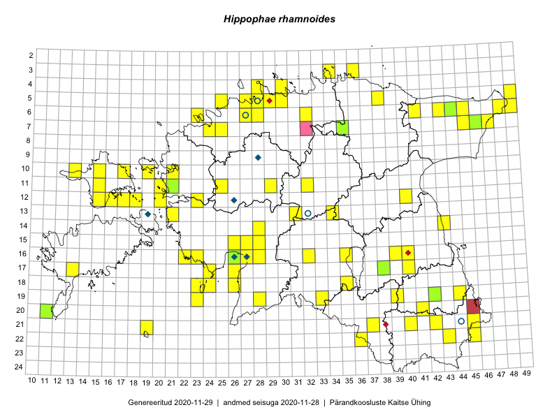

Hippophae rhamnoides
Uuendatud: 2016-12-07
Kaardile koondatud taksonid: Hippophae rhamnoides L.

Kaart põhineb 73 kirjel, neist vaatlusi 70 ja eksemplare 3. Taksonit on leitud 46 ruudust.
| Ruut | Vaatleja(d) | Vaatlusaeg | Kirje tüüp | Viide andmebaasikirjele |
|---|---|---|---|---|
| 20-11 | Toomas Kukk, Peedu Saar | 2015-08-05 | ruut/ala | vaata PlutoFis |
| 06-41 | Peedu Saar, S. Laherand | 2015-06-01 | punkt | vaata PlutoFis |
| 07-46 | Peedu Saar, Liina Oja | 2015-07-23 | punkt | vaata PlutoFis |
| 07-46 | Peedu Saar, Liina Oja | 2015-07-23 | punkt | vaata PlutoFis |
| 05-49 | Tiit Hallikma, Toomas Kukk | 2015-07-22 | punkt | vaata PlutoFis |
| 07-47 | Peedu Saar, Sander Laherand | 2015-05-31 | ruut/ala | vaata PlutoFis |
| 16-40 | Thea Kull | 2015-07-26 | punkt | vaata PlutoFis |
| 04-30 | Rein Kalamees, Kersti Püssa | 2015-06-07 | punkt | vaata PlutoFis |
| 12-40 | Peedu Saar, Eerik Leibak | 2015-08-16 | punkt | vaata PlutoFis |
| 04-30 | Rein Kalamees, Kersti Püssa | 2015-09-01 | punkt | vaata PlutoFis |
| 03-34 | Rein Kalamees, Kersti Püssa | 2015-06-02 | punkt | vaata PlutoFis |
| 07-46 | Tiit Hallikma, Toomas Kukk, Meeli Mesipuu | 2015-05-31 | punkt | vaata PlutoFis |
| 07-46 | Tiit Hallikma, Toomas Kukk, Meeli Mesipuu | 2015-05-31 | punkt | vaata PlutoFis |
| 06-43 | Tiit Hallikma, Toomas Kukk | 2015-05-30 | punkt | vaata PlutoFis |
| 06-43 | Tiit Hallikma, Toomas Kukk | 2015-05-30 | punkt | vaata PlutoFis |
| 06-43 | Tiit Hallikma, Toomas Kukk | 2015-05-30 | punkt | vaata PlutoFis |
| 04-30 | Rein Kalamees, Kersti Püssa | 2015-06-12 | punkt | vaata PlutoFis |
| 07-45 | Ott Luuk, Hannes Pehlak | 2015-07-22 | ruut/ala | vaata PlutoFis |
| 14-43 | Thea Kull, Eerik Leibak | 2015-07-06 | ruut/ala | vaata PlutoFis |
| 14-43 | Thea Kull, Eerik Leibak | 2015-07-06 | punkt | vaata PlutoFis |
| 17-13 | Mari Reitalu, Sirje Azarov | 2015-05-12 | punkt | vaata PlutoFis |
| 16-26 | Meeli Mesipuu | 2015-06-27 | punkt | vaata PlutoFis |
| 06-45 | Timo Luhamäe, Eerik Leibak | 2015-05-31 | ruut/ala | vaata PlutoFis |
| 07-46 | Eerik Leibak, Uudo Timm | 2015-07-09 | ruut/ala | vaata PlutoFis |
| 07-46 | Eerik Leibak, Uudo Timm | 2015-07-09 | punkt | vaata PlutoFis |
| 06-45 | Eerik Leibak, Uudo Timm | 2015-07-09 | punkt | vaata PlutoFis |
| 06-45 | Eerik Leibak, Uudo Timm | 2015-07-09 | ruut/ala | vaata PlutoFis |
| 06-45 | Timo Luhamäe, Eerik Leibak | 2015-05-31 | punkt | vaata PlutoFis |
| 05-29 | Peedu Saar, Sander Laherand | 2013-07-07 | ruut/ala | vaata PlutoFis |
| 13-21 | Rein Kalamees, Kersti Püssa | 2016-05-12 | punkt | vaata PlutoFis |
| 06-28 | Toomas Kukk | 2016-06-02 | punkt | vaata PlutoFis |
| 21-37 | Silvia Pihu | 2015-06-28 | punkt | vaata PlutoFis |
| 19-44 | Peedu Saar, Tarmo Niitla | 2016-06-15 | punkt | vaata PlutoFis |
| 21-40 | Peedu Saar, Tarmo Niitla | 2016-06-17 | punkt | vaata PlutoFis |
| 19-28 | Peedu Saar, Ott Luuk | 2016-06-09 | punkt | vaata PlutoFis |
| 17-24 | Indrek Tammekänd | 2016-05-23 | punkt | vaata PlutoFis |
| 10-19 | Liina Oja, Rein Kalamees | 2016-07-07 | punkt | vaata PlutoFis |
| 12-20 | Liina Oja, Rein Kalamees | 2016-07-05 | punkt | vaata PlutoFis |
| 05-30 | Sander Laherand, Eerik Leibak | 2016-07-29 | ruut/ala | vaata PlutoFis |
| 12-17 | Sander Laherand, Thea Kull, Nele Jõessar | 2016-08-11 | punkt | vaata PlutoFis |
| 12-17 | Sander Laherand, Thea Kull, Nele Jõessar | 2016-08-11 | punkt | vaata PlutoFis |
| 05-30 | Sander Laherand, Eerik Leibak | 2016-07-29 | punkt | vaata PlutoFis |
| 03-36 | Liina Oja, Meeli Mesipuu | 2016-07-26 | punkt | vaata PlutoFis |
| 17-26 | Timo Luhamäe, Meeli Mesipuu | 2016-07-18 | punkt | vaata PlutoFis |
| 18-26 | Timo Luhamäe, Meeli Mesipuu | 2016-07-18 | punkt | vaata PlutoFis |
| 22-45 | Karin Kikas, Peedu Saar | 2016-08-18 | punkt | vaata PlutoFis |
| 18-23 | Karin Kaljund, Kaire Lanno, Indrek Melts | 2016-07-27 | punkt | vaata PlutoFis |
| 16-23 | Timo Luhamäe, Peedu Saar | 2016-07-04 | punkt | vaata PlutoFis |
| 19-33 | Liina Oja, Elle Rajandu | 2016-07-18 | punkt | vaata PlutoFis |
| 12-23 | Mari Reitalu, Oliver Parrest | 2016-07-05 | ruut/ala | vaata PlutoFis |
| 12-23 | Mari Reitalu, Oliver Parrest | 2016-07-05 | punkt | vaata PlutoFis |
| 18-23 | Peedu Saar, Ott Luuk | 2016-09-21 | punkt | vaata PlutoFis |
| 18-23 | Peedu Saar, Ott Luuk | 2016-09-21 | punkt | vaata PlutoFis |
| 19-23 | Karin Kaljund, Kaire Lanno, Indrek Melts | 2016-07-28 | punkt | vaata PlutoFis |
| 18-23 | Karin Kaljund, Kaire Lanno, Indrek Melts | 2016-07-27 | punkt | vaata PlutoFis |
| 18-24 | Karin Kaljund, Kaire Lanno, Indrek Melts | 2016-07-26 | punkt | vaata PlutoFis |
| 06-32 | Peedu Saar, Toomas Kukk | 2016-09-08 | punkt | vaata PlutoFis |
| 15-27 | Tiit Hallikma, Tõnu Ploompuu | 2016-07-20 | punkt | vaata PlutoFis |
| 05-38 | Thea Kull, Toomas Kukk | 2016-09-05 | punkt | vaata PlutoFis |
| 18-24 | Ott Luuk, Peedu Saar | 2016-09-21 | punkt | vaata PlutoFis |
| 18-24 | Ott Luuk, Peedu Saar | 2016-09-21 | punkt | vaata PlutoFis |
| 18-24 | Ott Luuk, Peedu Saar | 2016-09-21 | punkt | vaata PlutoFis |
| 21-19 | Ott Luuk, Meeli Mesipuu | 2016-09-10 | punkt | vaata PlutoFis |
| 05-29 | Sander Laherand, Toomas Kukk | 2016-09-29 | punkt | vaata PlutoFis |
| 18-35 | Peedu Saar, Mari Metsoja | 2016-07-20 | punkt | vaata PlutoFis |
| 05-29 | Kadi-Liis Kesler, Tiina Elvisto | 2015-05-12 | ruut/ala | vaata PlutoFis |
| 13-31 | Toivo Sepp, Oliver Parrest | 2016-07-21 | punkt | vaata PlutoFis |
| 17-26 | Meeli Mesipuu, Timo Luhamäe | 2016-07-18 | ruut/ala | vaata PlutoFis |
| 18-26 | Meeli Mesipuu, Timo Luhamäe | 2016-07-18 | ruut/ala | vaata PlutoFis |
| 21-42 | Ott Luuk, Sander Laherand, Susanna Vain | 2016-06-16 | punkt | vaata PlutoFis |
| 07-35 | Peedu Saar, Timo Luhamäe | 2015-05-12 | eksemplar | vaata PlutoFis |
| 17-38 | Peedu Saar, Thea Kull | 2015-06-17 | eksemplar | vaata PlutoFis |
| 07-46 | Peedu Saar, Sander Laherand | 2015-05-31 | eksemplar | vaata PlutoFis |